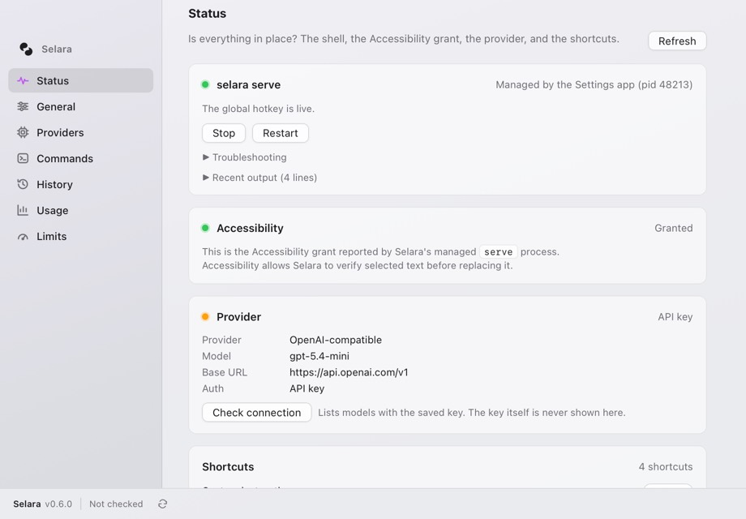
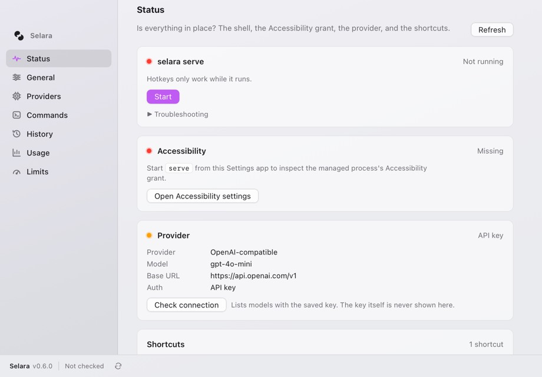
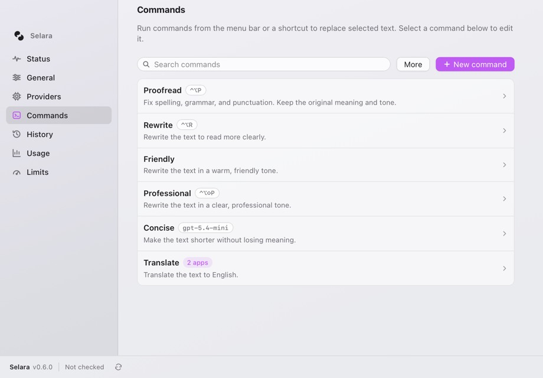
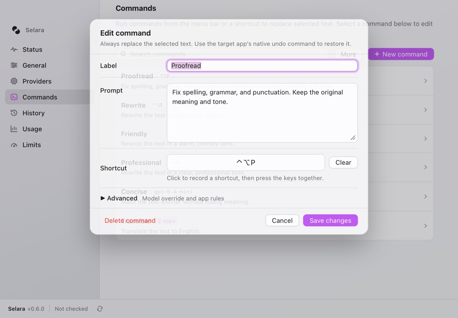
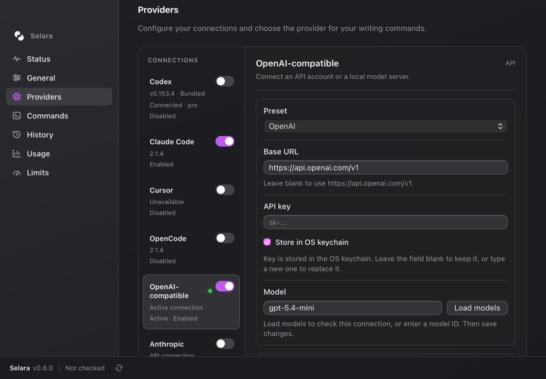
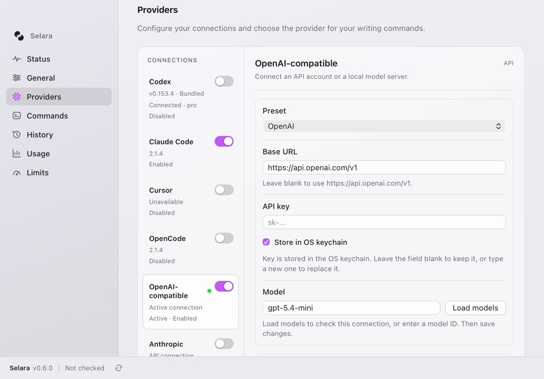
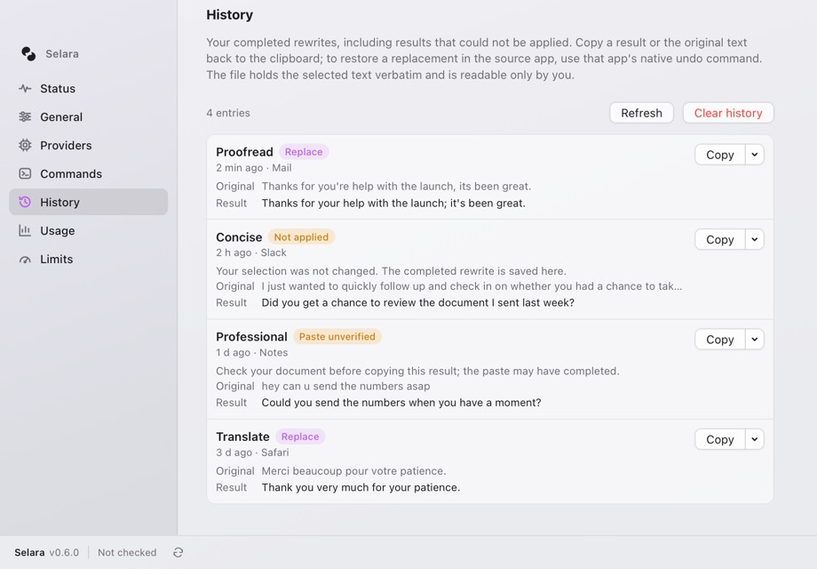
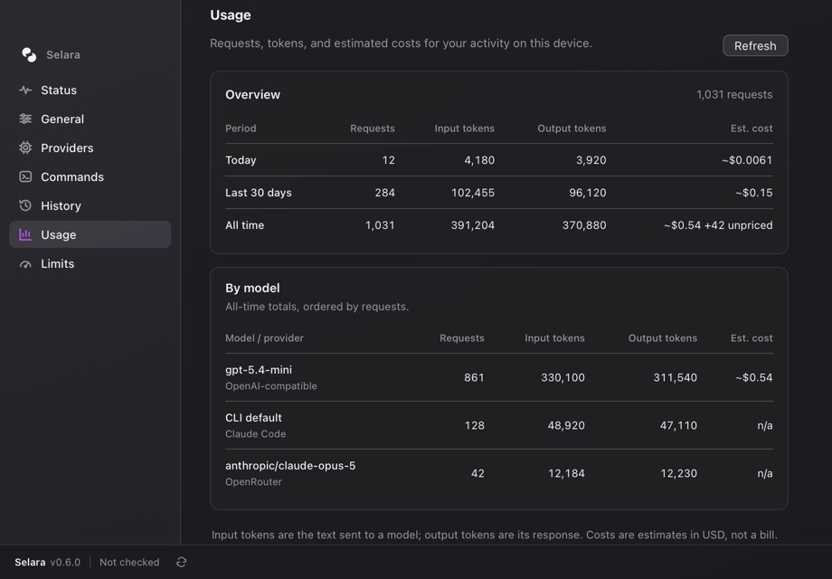
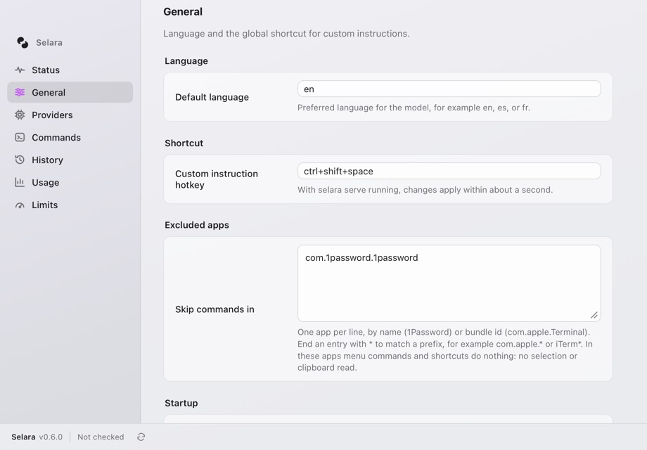
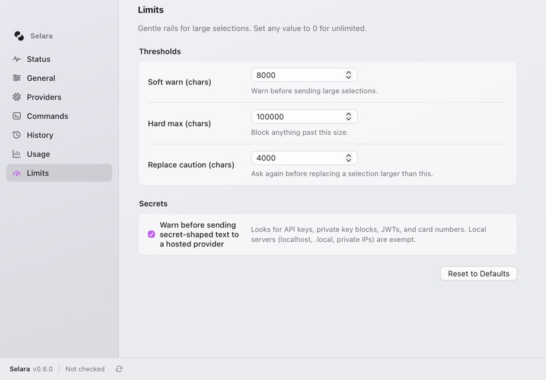

Selara, from the moment of use outward
A review of every surface, including the hotkey dialog, the working orb, the seven Settings tabs, the command sheet, and motion. Each surface gets 2–4 live directions that range from native refinements to new interaction ideas.
What the review found
The Settings window is already well tuned after the September native-feel passes. The biggest remaining gaps are in the surfaces people see every day: the hotkey dialog, the working orb, and the result.
- P1The hotkey dialog is the least designed surface. It is a stock egui window with a heading, a 4-row text box, and three equal-weight buttons. It can't run a saved command, doesn't show what's selected, and doesn't look like a Mac app.
- P1Feedback after the run is weak. The 40 px orb never says which command is running or how long it has taken. Success is a green checkmark shown for 0.65 s, with no undo hint and no way to see what changed.
- P1First run doesn't guide. The
freshStatus shows three red or orange cards in no order, with copy like “Startserve… to inspect the managed process's Accessibility grant.” - P2Providers mixes up “Enabled” and “Active.” Codex shows “Connected · pro” and “Disabled” together, each row stacks three lines of meta, and “OpenAI-compatible” wraps.
- P2Prompts are edited blind. Nothing in Settings shows a command's output before it's used on real text.
- P2Inputs ask for raw syntax. The hotkey is typed as
ctrl+shift+space, the language asen, and excluded apps as bundle IDs in a textarea. Meanwhile the command sheet already has a shortcut recorder. - P2History has no diff. Original and result sit on separate lines, so you have to read both to find what changed. The “Replace” outcome badge uses the accent color, so it reads like a tag.
- P3Usage and Limits are tables of numbers. Usage shows no trend. Limits are three unrelated character counts whose order (caution < soft < hard) is never shown, and the secret checkbox label wraps to three lines.
- P3Small things: Status shows an orange Provider dot for a working config with no explanation. “More” on Commands is vague. Lead paragraphs run three lines on History. The footer says “Not checked” all the time.
Surface health
A subjective 0–10 score for craft and clarity as reviewed today.
Principles behind the directions
- Feedback lives where the text is. The user's eyes are on the selection, not the menu bar or the Settings window.
- Show the change, not just the result. A diff builds trust faster than a checkmark.
- Never ask for syntax a Mac can capture. Record keys, pick apps, and choose languages from lists.
- Calm by default, expressive at the edges. Settings stays native and still; motion belongs to the moment of use.
The moment of use
From pressing a command shortcut to the text being replaced. Today, after 180 ms an orb appears beside the editor, then a checkmark for 0.65 s. Every direction here keeps the “one replacement after the full response” rule.
Issues
- P1The orb is beautiful but tells you nothing. With several shortcuts set up, you can't confirm which command you triggered.
- P1Success disappears in under a second, and the ⌘Z undo path is only mentioned in docs and History copy.
- P2Errors switch to a different visual system (egui window), so failure feels like another app.
Thanks,
Sam
The highlight shimmers while the model works, the new words write in one by one, and a green afterglow marks the edited range for 1.5 s.
What works
No extra object to find; the chip names the command and the Esc affordance. The afterglow answers “what changed?” without a dialog, and the ⌘Z hint finally appears at the point of use.
What risks
Drawing over another app's text needs exact bounds per line, and multi-line selections need a per-line rect via AXBoundsForRange. The overlay must stay click-through and never cover the caret.
Pick this if
You want the signature moment people screen-record and share, and you're willing to keep the orb as the fallback.
Thanks,
Sam
Hover turns the capsule into “Cancel · esc”, same as today. The success receipt stays 2 s, or until the next keystroke in the source app.
What works
Keeps the ThinkingOrbsKit investment front and center. The elapsed counter reassures you during slow CLI providers (Claude Code can take seconds). The receipt shows the character delta so a wrong replacement stands out.
What risks
The capsule widens the panel from 48 px to ~320 px; progressOrigin must flip it left near screen edges. Showing the model name may leak config in screen shares (make it optional).
Pick this if
You want a solid improvement this week. It's a Progress.swift-only change with no new AX work.
Thanks,
Sam
The island is a non-activating NSPanel at the top center of the active screen. It springs open on success and folds back after 2.5 s.
What works
Location never changes, so it's easy to learn. The receipt has room for actions, including “Copy original”, which today lives only in History. It works in every app regardless of AX bounds.
What risks
It looks like Dynamic Island, which can read as borrowed. On notched MacBooks it must sit beside the notch, not under it. Your eyes jump about 400 px from the text to the top of the screen.
Pick this if
You also want a home for queued or concurrent runs and update notices. One system surface would carry all of them.
Thanks,
Sam
Results stream into the card (preview only); the document is still written once, on ↩. Turn it on per command under Advanced → “Review before replacing”.
What works
Turns “Paste unverified” and “Not applied” fallbacks into a first-class path, since the result is already on screen to copy. ⇥ “Another take” makes the model feel like a collaborator rather than a vending machine.
What risks
The card must take key focus to catch ↩, which conflicts with the current “never steal focus” stance; it needs careful refocus to the source app. Streaming means changing providers to emit partial text.
Pick this if
Users hesitate to point Selara at important email. Pair it with A or B as the default for everything else.
The custom-instruction hotkey
⌃⇧Space is Selara's front door. Today it opens an egui window, so it doesn't look like the native orb or the Settings app.
Custom instruction
Rebuilt from serve.rs UiPhase::Instruction (eframe default visuals)
Issues
- P1egui fonts, buttons, and focus ring are clearly not AppKit. It's the only part of Selara that doesn't feel native.
- P1One hotkey, one capability. You can't reach Proofread or Translate from here, so users must memorize several shortcuts or go to the menu bar.
- P2No preview of what's selected (“Transform the selection in Mail” only). The ↑ recall of past instructions is invisible until you read the footnote.
- P2⌘Enter in a multiline box is the right call for paragraphs, but most instructions are one line, where plain ↩ is expected.
What works
Raycast and Spotlight have already taught this pattern. The selection preview chip confirms the right text was captured before anything is sent. “Save as command” becomes ⌘S from any typed instruction.
What risks
It needs a real AppKit/SwiftUI panel instead of egui, so the dialog moves into the Swift side next to Progress.swift. ↩ vs ⌘↩ must be clear when the typed text matches a command name.
Pick this if
You want ⌃⇧Space to become “the Selara key”, the only shortcut a new user needs to learn.
I just wanted to quickly follow up and check in on whether you had a chance to take a look at the document I sent over last week.
What works
Most instructions are adjectives. Chips make them one keypress, and the compiled sentence stays visible and editable, so nothing is hidden. Number-key toggles keep it keyboard-first.
What risks
The chips are a second command system beside Commands. You'd want the chips to be user-editable (or simply the user's commands) to avoid two parallel vocabularies.
Pick this if
Your users are mostly polishing email and chat tone rather than writing bespoke prompts.
What works
Distinctive and memorable, it could become Selara's signature. It's precise without prompt engineering, and the compiled sentence teaches users what good instructions look like. A saved position works as a reusable “voice”.
What risks
Needs the pointer, so it's weaker for keyboard purists (arrow keys could nudge). It's novelty that has to stay accurate: the model must actually honor “slightly” vs “much”.
Pick this if
You want a differentiator for marketing and the App Store screenshot, offered as a mode inside A (Tab to switch).
This looks like it contains an API key
Large selection: 9,412 characters
What works
Highlighting the matched span shows exactly why Selara is asking, which builds trust in the guard instead of training people to click “Continue” blindly.
What risks
Redaction changes the text the model sees, and the result must restore the secret in place, which only works for spans that survive the rewrite untouched.
Pick this if
Always worth doing for the meter. Add redaction later.
Status & first run
The tab Settings opens on. It should answer one question in under a second: “Will the hotkey work right now?”


Issues
- P1No single verdict. You have to read four cards to learn whether things work.
- P1First run lists problems instead of steps. The order (Start serve → grant Accessibility → add a key) is implied but never shown.
- P2The orange Provider dot on a working config isn't explained (unchecked? warning?).
- P3The lead paragraph repeats the section, and “Managed by the Settings app (pid 48213)” is developer detail placed at headline level.
Ready
Select text in any app and press ⌃⇧Space
What works
Healthy is calm and confident, and the hotkey shown as keycaps doubles as a reminder. When it isn't healthy, the same space becomes a numbered checklist. It advances automatically as serve-changed events arrive.
What risks
“Ready” must be honest. If the provider has never been checked, show “Ready · provider not yet tested” rather than green.
Pick this if
Default recommendation. Highest impact per effort in the whole review.
Selara can't read your selection. macOS needs to allow Accessibility for “Selara” before shortcuts can work.
Open Accessibility SettingsWhat works
It explains why serve, Accessibility, and a provider all matter, a mental model the current cards never give. It's also great for support screenshots.
What risks
A five-node graph takes space for what is usually a green row of checks. The animated packet must stop with Reduce Motion.
Pick this if
Support tickets are mostly “it doesn't work” and you want users to self-diagnose.
What works
Replaces “Check connection” (which lists models) with a test that means something to a writer. The same component can sit in the command editor (chapter 4A) and in Providers.
What risks
Needs a new Tauri command that runs a prompt (the CLI already has selara run). It spends tokens, so make that obvious.
Pick this if
Combine with A: the hero's “Try it…” button opens this pad.
Commands & the command sheet
Where users shape Selara to their voice. The list and sheet are clean; what's missing is feedback while you edit a prompt.


Issues
- P2Prompt editing is blind. You save, switch apps, select text, run, then come back to tweak.
- P2
{{language}}and{{app}}exist but aren't discoverable in the editor. - P3The list order is the menu-bar order, but nothing says so, and you can't reorder.
- P3A modal sheet hides the list, so comparing two prompts means opening and closing repeatedly.
What works
Samples come from the user's own History, so tests use real text. Template tokens become pills you insert, which removes the need to read docs. Auto-save matches the save-as-you-go model already used on General and Limits.
What risks
Load-bearing ids from the sheet (#command-sheet fields) would need to move or be kept as aliases. Each ⌘R spends tokens.
Pick this if
Custom commands are a core use case and users iterate on prompts.
What works
The menu preview makes the link between Settings and the menu bar obvious. Glyphs and colors carry over to the Spotlight bar (2A), the orb capsule (1B), and History, giving each command a consistent identity everywhere.
What risks
Drag-to-reorder in a WKWebView must feel native (spring, insertion gap). Users with 20+ commands need the list view back.
Pick this if
You want commands to feel like personal tools, not config rows. Offer it as a grid/list toggle.
What works
“Return only the text” is locked on. It's the line most user prompts forget, and the reason models add “Here's your rewrite:”. Blocks make the nine built-ins easy to remix.
What risks
A prompt hand-edited as text can't be turned back into blocks. Store it as text and only offer blocks on creation.
Pick this if
You want “New command” to work for non-technical users. It's a small add-on to the existing sheet.
Providers
Seven connection types with two separate concepts: enabled (configured and allowed) and active (what commands use). The UI currently shows both concepts with similar weight.


Issues
- P2Enabled (toggle) vs Active (dot + “Active connection” + box) is hard to parse. Turning on Claude Code doesn't make commands use it.
- P2Contradictory status text (Connected but Disabled) and three meta lines per row.
- P3“CONNECTIONS” uppercase label and the bordered box inside a group read like web UI.
What works
Grouping by how you connect (account, CLI, key) explains why the forms differ. One status line per row fits all seven without scrolling. The model becomes a pop-up filled by “Load models” automatically.
What risks
Latency isn't recorded today (aspirational). The .provider-toggle switch and its ids would move, so the e2e tests need updating.
Pick this if
Default recommendation. It resolves the main confusion with modest effort.
| Command | OpenAI-compatible | Claude Code | OpenCode | ChatGPT |
|---|---|---|---|---|
| Default | ||||
| Proofread | ||||
| Professional | ||||
| Concise · gpt-5.4-mini | ||||
| Translate |
What works
It makes “several connections enabled” actually mean something, which today's toggles imply but don't deliver. Gray dots show inherited defaults at a glance.
What risks
Schema change (command.provider), migration, and more failure modes, e.g. a command routed to a CLI that later gets uninstalled.
Pick this if
Usage shows people really do enable several providers. Otherwise A is enough.
History
The last 50 rewrites, including the ones Selara couldn't apply. It's a safety net, so it should be quick to scan and quick to recover from.

Issues
- P2You have to read both lines to spot what changed (“you're → your” is easy to miss).
- P2No grouping or filtering. With 50 entries, the important “Not applied” ones get buried.
- P3The success badge “Replace” is the command kind, not an outcome, and its accent color makes the success case the loudest.
What works
A diff is the fastest proof of value (“look what it fixed”). “Needs attention” turns History into a recovery inbox, and the primary Copy appears only where recovery is needed. Command glyphs come from 4B.
What risks
A word-diff algorithm in the UI (small; Myers on tokens). Entries are capped at 50, so search over the cap needs no index.
Pick this if
Default recommendation. It's pure front-end work with fixtures that already exist.
What works
Memorable and fun, and it works for translations and tone changes where a word diff is meaningless (every word changes).
What risks
Line wrapping differs between original and result, so the wipe only aligns for short texts. Long ones should fall back to a side-by-side view.
Pick this if
Use it as the detail view for Translate and Professional entries inside A.
Usage
Requests, tokens, and estimated cost on this device. The numbers are accurate but give no sense of trend.

Issues
- P3No over-time view, even though
usage.jsonlkeeps a timestamp per event. - P3Token counts dominate; most writers care about requests and cost.
- P3“CLI default” as a model name means nothing to the user.
What works
One glance answers “am I using this?” and “what does it cost?”. Bars grow in on first view only, with no animation on refresh.
What risks
Day buckets need the user's local timezone. Cost precision should be rounded (“< $0.01”) so it doesn't imply false accuracy.
Pick this if
Default recommendation for the Usage tab.
❝ SELARA
What works
Gives Usage an emotional payoff, and “Copy as image” makes it shareable for word of mouth. Works fully from data that exists today.
What risks
A novelty that can feel gimmicky in a native utility. Keep it as a card or sheet (“Your receipt”), not the whole tab.
Pick this if
You want a playful moment, e.g. a monthly recap. Pairs with A.
General & Limits: inputs that capture instead of asking
The Mac can record keys, list apps, and name languages, so no field should require typing syntax.


Issues
- P2The command sheet records shortcuts, but General's hotkey is still a text field (open since the Sep 11 audit, item 6).
- P2Excluded apps need bundle IDs, which most users don't know. A running-apps picker would remove the problem.
- P3Limits: “chars” is abstract, and nothing prevents soft > hard.
Custom instruction shortcut
Language
Never run in
* prefixes still work for power users.Start at login
Selection size limits · drag the markers
What works
Markers can't cross (order is enforced visually), and “≈ 3 pages” means something to a writer. Chips with real app icons end bundle-ID guesswork. The conflict shake reuses macOS's own “no” gesture.
What risks
App icons need a small Tauri command (NSWorkspace icon for a bundle). Keep #limits-* inputs as hidden form state so existing save logic and tests hold.
Pick this if
Always. These are low-risk, high-polish wins that close an open audit item.
Motion system
Today motion is scattered: sheet-rise, dot-pulse, update-spin, a 150 ms switch, and Swift fades. A small token set would make Settings feel calm and the moment of use feel alive.
| Token | Value | Use |
|---|---|---|
| instant | 0 ms | Sidebar selection and page switch (System Settings swaps instantly) |
| micro | 120 ms ease-out | Toggles, field commit check, chip on/off |
| panel | 240 ms (.2,.8,.2,1) | Sheet drop, popovers, capsule expand |
| spring | 420 ms (.2,.9,.25,1.15) | Island and receipt growth (moment of use only) |
| reveal | 38 ms/word stagger | Ink Sweep word reveal, chart bars on first view |
| hold | 1.5–2.5 s | Success receipt and afterglow (until next keystroke) |
| Reduce Motion: every token becomes a 120 ms crossfade, loops stop, and the orb shows a static glyph. Shake becomes a red outline. | ||
Recommended path
Ordered by impact ÷ effort. “Pick” is my recommended direction per surface; alternatives remain viable.